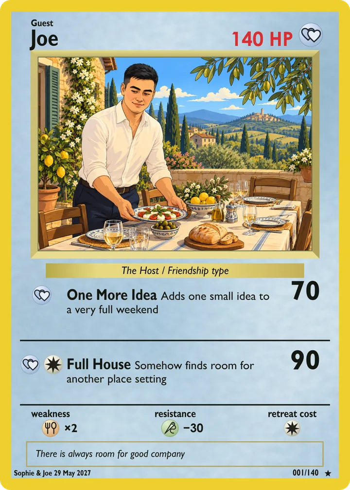
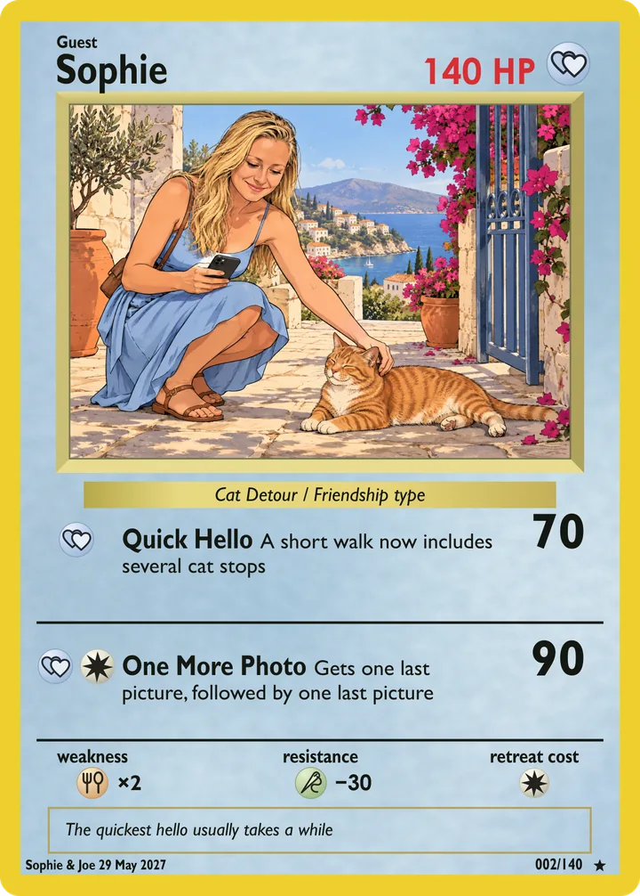

Joe · Card 001
The Host
Joe, ready to welcome everyone to Tuscany.
Open the card
An imagined Tuscan welcome, illustrated for our wedding collection.

View the illustration on its ownFrom the Sophie & Joe collection
Two illustrated cards, a few places in our story and five little questions.
Two illustrated cards from our wedding collection. Real inspiration, a little imagination.
Joe · Card 001
Joe, ready to welcome everyone to Tuscany.
An imagined Tuscan welcome, illustrated for our wedding collection.

View the illustration on its own
Sophie · Card 002
Inspired by Sophie with cats in Turkey in October 2025.
A real holiday moment inspired this illustrated scene.

View the illustration on its ownA story map, not to scale. Choose a place for its little story.
Five little questions. How well do you know us?
Joe's food brief was clear: tiramisu is a must.
Joe took on Christmas dinner in his tiny Wimbledon kitchen.
Sophie's cat photograph comes from Turkey in October 2025.
It was Sophie's chair. Padmé had other ideas.
Sophie's painting was suggested as the starting point for the invitations.
A few more little stories to take to Tuscany.
28–31 May 2027. Tuscany, with you.